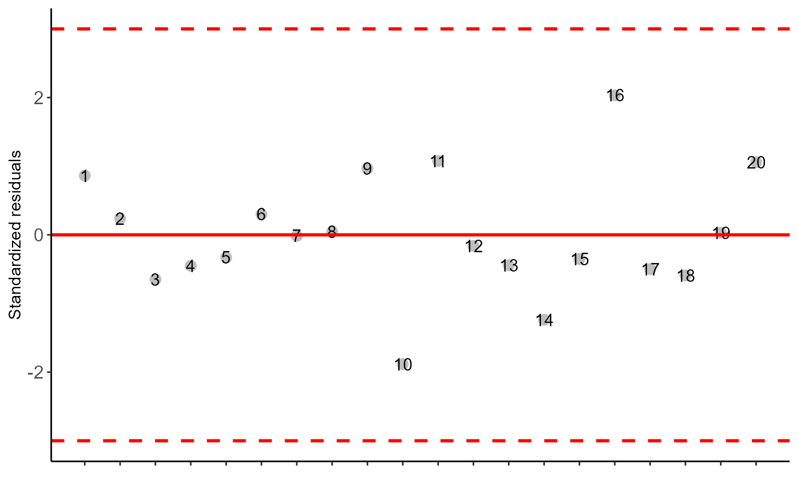
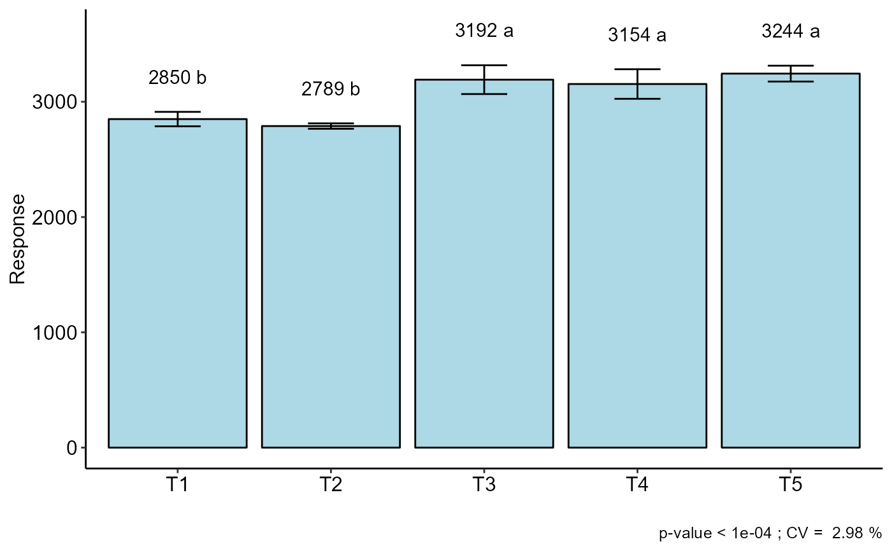

aacp.RdPerforms the calculation of the area under the progress curve. Initially created for the plant disease area, whose name is "area under the disease progress curve", it can be adapted to various areas of agrarian science.
aacp(data)
| data | Data.frame containing evaluations in columns. Column names must be numeric and not dates or characters |
|---|
Returns a vector with the area values under the curve
Just enter the data. Exclude treatment columns. See example.
Campbell, C. L., and Madden, L. V. (1990). Introduction to plant disease epidemiology. John Wiley and Sons.
Gabriel Danilo Shimizu, shimizu@uel.br
#======================================= # Using the simulate1 dataset #======================================= data("simulate1") # Converting to readable format for function dados=cbind(simulate1[simulate1$tempo==1,3], simulate1[simulate1$tempo==2,3], simulate1[simulate1$tempo==3,3], simulate1[simulate1$tempo==4,3], simulate1[simulate1$tempo==5,3], simulate1[simulate1$tempo==6,3]) colnames(dados)=c(1,2,3,4,5,6) dados#> 1 2 3 4 5 6 #> 1 279.30 342.0000 491.6970 652.9091 814.1212 975.3333 #> 2 252.70 333.0000 475.5758 636.7879 820.0000 959.2121 #> 3 223.44 326.2933 457.8424 619.0545 780.2667 991.0000 #> 4 224.77 327.1800 448.0000 669.0000 781.0727 942.2848 #> 5 215.46 320.9733 453.0061 614.2182 795.0000 936.6424 #> 6 242.06 328.0000 469.1273 630.3394 791.5515 952.7636 #> 7 230.09 330.7267 461.8727 623.0848 784.2970 945.5091 #> 8 204.82 313.8800 496.0000 647.0000 768.9818 930.1939 #> 9 348.46 409.6400 553.0000 778.0000 856.0364 1017.2485 #> 10 297.92 375.9467 502.9818 674.0000 825.4061 986.6182 #> 11 397.67 393.0000 563.4364 724.6485 885.8606 1047.0727 #> 12 348.46 409.6400 533.6121 694.8242 856.0364 1017.2485 #> 13 335.16 333.0000 525.5515 735.0000 847.9758 1009.1879 #> 14 293.93 373.2867 524.0000 661.7758 835.0000 1001.0000 #> 15 336.49 386.0000 526.3576 687.5697 848.7818 1009.9939 #> 16 428.26 362.0000 581.9758 743.1879 904.4000 1065.6121 #> 17 355.11 414.0733 537.6424 698.8545 860.0667 1021.2788 #> 18 324.52 450.0000 555.0000 680.3152 841.5273 1002.7394 #> 19 369.74 423.8267 546.5091 707.7212 868.9333 1030.1455 #> 20 353.78 413.1867 536.8364 844.0000 859.2606 1020.4727# Creating the treatment vector resp=aacp(dados)#> [1] 2928.044 2871.320 2790.677 2808.780 2759.249 2816.430 2787.781 2793.369 #> [9] 3279.531 3020.604 3289.317 3176.967 3113.701 3041.527 3121.951 3338.500 #> [17] 3198.831 3190.472 3246.933 3340.410#> #> ----------------------------------------------------------------- #> Normality of errors #> ----------------------------------------------------------------- #> Method Statistic p.value #> Shapiro-Wilk normality test(W) 0.9649386 0.6464355 #>#> As the calculated p-value is greater than the 5% significance level, hypothesis H0 is not rejected. Therefore, errors can be considered normal#> #> ----------------------------------------------------------------- #> Homogeneity of Variances #> ----------------------------------------------------------------- #> Method Statistic p.value #> Bartlett test(Bartlett's K-squared) 7.080008 0.1317201 #>#> As the calculated p-value is greater than the 5% significance level,hypothesis H0 is not rejected. Therefore, the variances can be considered homogeneous#> #> ----------------------------------------------------------------- #> Independence from errors #> ----------------------------------------------------------------- #> Method Statistic p.value #> Durbin-Watson test(DW) 2.40295 0.4925488 #>#> As the calculated p-value is greater than the 5% significance level, hypothesis H0 is not rejected. Therefore, errors can be considered independent#> #> ----------------------------------------------------------------- #> Additional Information #> ----------------------------------------------------------------- #> #> CV (%) = 2.98 #> R-squared = 0.96 #> Mean = 3045.7197 #> Median = 3077.6143 #> Possible outliers = No discrepant point #> #> ----------------------------------------------------------------- #> Analysis of Variance #> ----------------------------------------------------------------- #> Df Sum Sq Mean.Sq F value Pr(F) #> trat 4 706357.0 176589.259 21.41243 4.653501e-06 #> Residuals 15 123705.7 8247.045 #> #>#> As the calculated p-value, it is less than the 5% significance level.The hypothesis H0 of equality of means is rejected. Therefore, at least two treatments differ#> #> #> ----------------------------------------------------------------- #> Multiple Comparison Test #> ----------------------------------------------------------------- #> resp groups #> T5 3244.162 a #> T3 3191.605 a #> T4 3153.920 a #> T1 2849.705 b #> T2 2789.207 b #>#>